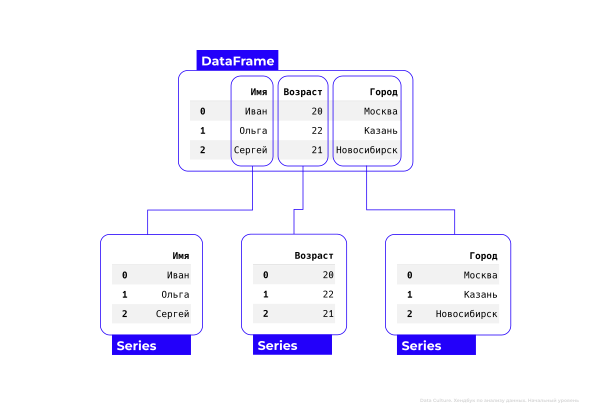

Хендбук. Анализ данных - базовый уровень
Глава 1. Знакомство с библиотекой Pandas. Типы данных в анализе.
1.1 Что такое библиотека Pandas?
Представьте себе большую коробку с инструментами: там есть молоток, отвертка, пила и другие полезные вещи. Когда мы строим дом, нам не нужно изобретать эти инструменты заново — мы просто берем их из коробки и используем. Так и с библиотеками: когда программисту нужно сделать что-то сложное, например, обработать данные или нарисовать график, он берет готовую библиотеку, подключает её к своему проекту и пользуется уже написанным кодом.
Готовые инструменты для работы с табличными данными хранятся в библиотеке Pandas. Эта библиотека позволяет быстро загружать, сортировать, фильтровать и анализировать большие объемы данных, как если бы мы работали с электронными таблицами, такими как Excel. Однако Pandas имеет ряд объективных преимуществ перед Excel:
- Excel ограничен количеством строк (~1 млн строк максимум). Библиотека Pandas способна эффективно обрабатывать миллионы и даже миллиарды строк благодаря оптимизации вычислительных процессов внутри Python.
- Производительность Excel резко падает при увеличении объема обрабатываемых данных. Формулы, сводные таблицы и фильтры начинают тормозить, особенно если файл занимает много места в оперативной памяти. Библиотека Pandas способна намного эффективнее справляться со сложными операциями и расчетами на больших объемах.
- Работа в Excel зачастую связана с ручным редактированием формул и визуальным управлением данными, что делает процесс более трудоемким. В Python можно написать программу один раз, а потом многократно запускать её снова и снова, каждый раз получая стабильный и точный результат
- Эффективное использование Excel для анализа больших данных требует знания VBA-макросов, настройки Power Query и понимания тонкостей работы со сводными таблицами. Для решения аналогичных задач на Python достаточно базовых навыков программирования и умения пользоваться библиотеками Pandas.
Excel отлично подходит для небольших отчетов и простого анализа. Когда дело доходит до крупных проектов и регулярного обновления данных, профессиональные инструменты, такие как библиотека Pandas, становятся незаменимыми.
Чтобы начать использовать инструменты библиотеки Pandas, необходимо сделать импорт библиотеки в среду выполнения:
import pandas as pd- import – оператор, который подключает библиотеку в среду выполнения
- pandas - название импортируемой библиотеки
- as - оператор, с помощью которого задается псевдоним библиотеки
- pd - псевдоним, который позволяет обращаться к функциям библиотеки Pandas через сокращение pd. Это делается для удобства и сокращения кода.
Если при запуске кода вышла такая ошибка, это значит, что модуль Pandas еще не установлен на вашем компьютере. Чтобы его установить, нужно перед импортом добавить строку:
!pip install pandas1.2 Какие существуют структуры данных Pandas?
В библиотеке Pandas есть два основных способа хранения табличных данных: датафрейм DataFrame и серия Series.
DataFrame
Представьте себе электронную таблицу, такую как Excel. У неё есть строки и столбцы, и в каждой ячейке хранится информация. Датафрейм в Pandas — это такая же таблица, только для программирования. Он состоит из строк и столбцов, и каждая ячейка содержит данные.
Чтобы создать датафрейм, необходимо воспользоваться функцией pd.DataFrame() из библиотеки Pandas :
переменная = pd.DataFrame()
Для добавления столбцов мы указываем название переменной , в которой лежит датафрейм, затем в квадратных скобках указываем 'название столбца' и в него передаем список значений:
переменная['название столбца'] = [значение 1, значение 2, ...]
Столбцы могут иметь разные типы данных: числа, тексты, даты и т.д.
Предположим, мы хотим создать датафрейм с информацией про трех студентов. Чтобы его создать, нужно написать следующий код:
students = pd.DataFrame() # cоздаем пустой датафрейм
students['Имя'] = ['Иван', 'Ольга', 'Сергей'] # добавляем столбец с именами
students['Возраст'] = [20, 22, 21] # добавляем столбец с возрастом
students['Город'] = ['Москва', 'Казань', 'Новосибирск'] # добавляем столбец с городом
students # выводим датафрейм на экран Результат работы программы:
| Имя | Возраст | Город | |
|---|---|---|---|
| 0 | Иван | 20 | Москва |
| 1 | Ольга | 22 | Казань |
| 2 | Сергей | 21 | Новосибирск |
Первая колонка, выделенная жирным, — это индексы строк. Они служат уникальными номерами для каждой строки в датафрейме и позволяют быстро обращаться к нужной. Индексы создаются автоматически и начинаются с нуля.
Строку также называют наблюдением . Наблюдением в наших данных является студент. Например, мы видим, что Ольге 22 года и она из Казани. Это одно наблюдение.
Столбцы — это признаки , которые описывают наши наблюдения. Мы описываем наблюдения тремя характеристиками – именем, возрастом и городом.
Series
Каждый отдельный столбец датафрейма имеет формат серии (Series). Серия — это набор значений с уникальными метками (индексами). По сути, датафрейм состоит из множества серий, каждая из которых представляет собой колонку с индексами и колонку со значениями:
Помимо этого, мы можем создать собственную серию, которая не будет частью датафрейма. Чтобы это сделать, нужно воспользоваться функцией pd.Series() из библиотеки Pandas, а внутрь функции передать параметр data со списком значений:
переменная = pd.Series(data=[значение 1, значение 2, ...])
Предположим, у нас есть средний балл трех студентов. Чтобы сохранить эту информацию в серию, нужно написать следующий код:
gpa = pd.Series(data=[3.55, 8.24, 7.65]) # создаем серию
gpa # выводим серию на экранРезультат работы программы:
| 0 | |
|---|---|
| 0 | 3.55 |
| 1 | 8.24 |
| 2 | 7.65 |
Первый столбец, выделенный жирным, — индексы. Так же как и в датафрейме, они создаются автоматически и начинаются с нуля. С их помощью можно обратиться к любому значению в серии. Второй столбец — значения. В нашем случае это средний балл студентов.
Можно задать свои кастомные индексы для строк серии – для этого при создании нужно передать второй список с индексами в параметре index:
переменная = pd.Series(data=[значение 1, значения 2, ...],
index=[индекс 1, индекс 2, ...])
Например, мы хотим создать серию, в которой значением останется средний балл, а индексами будут имена студентов:
names_gpa = pd.Series(data=[3.55, 8.24, 7.65], # значения
index=['Иван', 'Ольга', 'Сергей']) # индексы
names_gpa # выводим серию на экранРезультат работы программы:
| 0 | |
|---|---|
| Иван | 3.55 |
| Ольга | 8.24 |
| Сергей | 7.65 |
Имена здесь не полноценная колонка, они лишь уникальные идентификаторы среднего балла.
1.3 Как извлекать основные элементы DataFrame?
В прошлом разделе мы создали датафрейм students . Сейчас мы научимся обращаться к его основным элементам: столбцам, строкам и конкретным значениям.
students # выводим датафрейм на экранРезультат работы программы:
| Имя | Возраст | Город | |
|---|---|---|---|
| 0 | Иван | 20 | Москва |
| 1 | Ольга | 22 | Казань |
| 2 | Сергей | 21 | Новосибирск |
ОБРАЩЕНИЕ К СТОЛБЦУ
Если мы хотим извлечь столбец из данных, нужно указать сначала название переменной, в которой лежит датафрейм , а затем в квадартных скобках и кавычках указать название столбца , который требуется извлечь:
датафрейм['название столбца']
Например, мы хотим извлечь столбец Возраст – для этого пишем следующий код:
students['Возраст']| Возраст | |
|---|---|
| 0 | 20 |
| 1 | 22 |
| 2 | 21 |
Как мы уже говорили, каждый отдельный столбец датафрейма имеет формат серии (Series).
ОБРАЩЕНИЕ К СТРОКЕ
Для обращения к строке используется атрибут .loc[] :
датафрейм.loc[индекс]
Если нам нужно извлечь информацию про Ольгу (информация про нее записана в строке под индексом 1) — пишем следующий код:
students.loc[1]| 1 | |
|---|---|
| Имя | Ольга |
| Возраст | 22 |
| Город | Казань |
ОБРАЩЕНИЕ К ЗНАЧЕНИЮ
К значению мы обращаемся по индексу строки и названию столбца одновременно:
датафрейм.loc[индекс]['название столбца']
или
датафрейм.loc[индекс, 'название столбца']
Если нам нужен Возраст Ольги (у нее индекс 1):
students.loc[1]['Возраст']Результат работы программы:
22
или
students.loc[1, 'Возраст']Результат работы программы:
22
1.4 Как открывать уже готовые таблицы?
Библиотека Pandas позволяет открывать уже готовые файлы с различными расширениями. Одним из наиболее распространенных форматов является .csv (Comma Separated Values), который широко используется для хранения табличных данных. Если вам необходимо открыть файл с расширением .csv:
переменная = pd.read_csv('путь к файлу')
Другой популярный формат — это .xlsx, применяемый в Microsoft Excel. Если вам необходимо открыть файл с расширением .xlsx:
переменная = pd.read_excel('путь к файлу')
Еще одно расширение, удобное для хранения табличных данных - это .pkl (Pickle). Чтобы открыть такой файл, используйте следующий код:
переменная = pd.read_pickle('путь к файлу')
Давайте попробуем открыть файл oscar.pkl. Скачайте его, а затем введите следующий код:
import pandas as pd
df = pd.read_pickle('путь к файлу/oscar.pkl') # открываем файл oscar.pkl
df # выводим датафрейм на экранВместо путь к файлу укажите путь к файлу oscra.pkl на вашем компьютере.
macOS
- 1. Найдите файл на компьютере
- 2. Нажмите на него правой кнопкой мыши -> Свойства -> Основные -> Где: путь к файлу
- 3. Нажмите на путь к файлу правой кнопкой мыши -> Скопировать как путь
- 4. Указывая путь в функции, не забудьте дописать название файла с расширением: /название.расширение
Windows
- 1. Найдите файл на компьютере
- 2. Нажмите на него правой кнопкой мыши -> Свойства -> Расположение: путь к файлу
- 3. Скопируйте путь к файлу
- 4. Указывая путь в функции, не забудьте дописать название файла с расширением: /название.расширение
Windows 10 и позднее
- 1. Найдите файл на компьютере
- 2. Нажмите на него правой кнопкой мыши -> Копировать как путь
FileNotFoundError
Вы неправильно указали путь к файлу. Попробуйте еще раз проделать все шаги в инструкции КАК НАЙТИ ПУТЬ К ФАЙЛУ?
SyntaxError: invalid syntax
Вы допустили синтаксическую ошибку: например, забыли закрыть скобку или кавычку, или сделали лишний отступ. Проверьте код еще раз.
SyntaxError: (unicode error) 'unicodeescape' codec can't decode bytes in position 2-3: truncated \UXXXXXXXX escape
Такая ошибка возникает, когда Python пытается интерпретировать строку, содержащую обратный слеш, как экранированную последовательность Unicode. Эта ошибка часто встречается при попытке использовать пути к файлам в Windows. Её можно легко исправить, добавив r перед путем к файлу:
df = pd.read_pickle(r'путь к файлу/oscar.pkl')Если вы все сделали верно, откроется следующая таблица:
| Film | Award | Rating | Votes | Content Rating | Release Date | |
|---|---|---|---|---|---|---|
| 0 | Wings | True | 7.5 | 12221 | PG-13 | 1927-08-12 |
| 1 | 7th Heaven | False | 7.7 | 3439 | NaN | NaT |
| 2 | The Racket | False | 6.7 | 1257 | NaN | NaT |
| 3 | The Broadway Melody | True | 5.7 | 6890 | NaN | 1929-02-01 |
| 4 | Alibi | False | 5.8 | 765 | NaN | NaT |
| ... | ... | ... | ... | ... | ... | ... |
| 566 | Mank | False | 6.9 | 65380 | NaN | NaT |
| 567 | Minari | False | 7.5 | 57976 | NaN | NaT |
| 568 | Promising Young Woman | False | 7.5 | 122269 | NaN | NaT |
| 569 | Sound of Metal | False | 7.8 | 102807 | NaN | NaT |
| 570 | The Trial of the Chicago 7 | False | 7.8 | 156283 | NaN | NaT |
ПРОСМОТР ДАННЫХ
У нас есть три основных способа посмотреть на наши данные.
Первый – написать название переменной, в которой лежит датафрейм (как мы сделали в коде выше):
dfВ этом случае выводится все содержимое датафрейма. Если данных очень много, выведутся первые и последние 5 строчек таблицы – это как раз наш случай.
Второй варинт — это метод .head() , который выводит первые 5 строчек таблицы:
df.head()| Film | Award | Rating | Votes | Content Rating | Release Date | |
|---|---|---|---|---|---|---|
| 0 | Wings | True | 7.5 | 12221 | PG-13 | 1927-08-12 |
| 1 | 7th Heaven | False | 7.7 | 3439 | NaN | NaT |
| 2 | The Racket | False | 6.7 | 1257 | NaN | NaT |
| 3 | The Broadway Melody | True | 5.7 | 6890 | NaN | 1929-02-01 |
| 4 | Alibi | False | 5.8 | 765 | NaN | NaT |
На самом деле, с помощью него можно вывести любое количество первых строк; достаточно указать это количество в круглых скобках. Например, если хочется вывести 7 первых строк, нужно написать следующий код:
df.head(7)| Film | Award | Rating | Votes | Content Rating | Release Date | |
|---|---|---|---|---|---|---|
| 0 | Wings | True | 7.5 | 12221 | PG-13 | 1927-08-12 |
| 1 | 7th Heaven | False | 7.7 | 3439 | NaN | NaT |
| 2 | The Racket | False | 6.7 | 1257 | NaN | NaT |
| 3 | The Broadway Melody | True | 5.7 | 6890 | NaN | 1929-02-01 |
| 4 | Alibi | False | 5.8 | 765 | NaN | NaT |
| 5 | Hollywood Revue | False | 5.7 | 2004 | NaN | NaT |
| 6 | In Old Arizona | False | 5.6 | 1019 | NaN | 1928-12-25 |
Если нужно вывести последние 5 строчек таблицы, можно воспользоваться методом .tail() :
df.tail()| Film | Award | Rating | Votes | Content Rating | Release Date | |
|---|---|---|---|---|---|---|
| 566 | Mank | False | 6.9 | 65380 | NaN | NaT |
| 567 | Minari | False | 7.5 | 57976 | NaN | NaT |
| 568 | Promising Young Woman | False | 7.5 | 122269 | NaN | NaT |
| 569 | Sound of Metal | False | 7.8 | 102807 | NaN | NaT |
| 570 | The Trial of the Chicago 7 | False | 7.8 | 156283 | NaN | NaT |
Аналогично методу .head() , .tail() может вывести любое количество последних строк; достаточно указать это количество в круглых скобках. Например, если требуется вывести 3 последние строки, нужно написать следующий код:
df.tail(3)| Film | Award | Rating | Votes | Content Rating | Release Date | |
|---|---|---|---|---|---|---|
| 568 | Promising Young Woman | False | 7.5 | 122269 | NaN | NaT |
| 569 | Sound of Metal | False | 7.8 | 102807 | NaN | NaT |
| 570 | The Trial of the Chicago 7 | False | 7.8 | 156283 | NaN | NaT |
1.5 Как получить основную информацию про DataFrame?
Пришло время познакомиться с нашими данными (oscar.pkl). Этот датасет содержит информацию о фильмах, номинированных на Оскар, и про каждый фильм нам известны следующие характеристики:
| Признак | Описание |
|---|---|
| Film | название фильма |
| Award | получил ли фильм Оскар (True — получил, False — не получил) |
| Rating | средний рейтинг фильма на портале IMDB |
| Votes | количество пользователей, поставивших оценку фильму на портале IMDB |
| Content Rating | возрастные ограничения: G — для всех возрастных категорий PG — для детей в сопровождении родителей PG-13 — для детей старше 13 лет R — лица, не достигшие 17-летнего возраста, допускаются на фильм только в сопровождении взрослых NC-17 — для лиц старше 17 лет |
| Release Date | дата выхода фильма |
РАЗМЕР ДАТАФРЕЙМА
Чтобы узнать количество строк и столбцов в датафрейме, можно воспользоваться свойством .shape :
df.shapeРезультат работы программы:
(571, 6)
Эта команда возвращает кортеж (tuple). Первое число - это количество строк (571 фильм), второе - количество столбцов (6 признаков, описывающих фильм).
ТИП ДАННЫХ СТОЛБЦОВ
Чтобы узнать, какие форматы данных лежат в каждой из колонок, воспользуйтесь свойством .dtypes :
df.dtypesРезультат работы программы:
| 0 | |
|---|---|
| Film | object |
| Award | bool |
| Rating | float64 |
| Votes | int64 |
| Content Rating | object |
| Release Date | datetime64[ns] |
Разберемся, что представляет из себя каждый из форматов.
- bool (признак Award): логический тип данных, значит в признаке может быть только два варианта значений (True или False ).
- int64 (признак Votes): признак содержит только целые числа. 64 - это количество битов, которое отводится под хранение одного числа.
- float64 (признак Rating): в столбце такого формата хранятся числа с плавающей точкой. У них есть дробная часть. Она может быть равна 0 (например 5.0), но тем не менее она есть.
- datetime64[ns] (признак Release Data): специальный формат данных в библиотеке Pandas, предназначенный для хранения даты и времени. Дата, в целом, может храниться в формате object, а признак с информацией о годе – в формате int64
- object (признак Film , Content Rating ): как правило, хранит текстовую информация (строки (str)), но может хранить и смешанные типы данных.
ОСНОВНАЯ ИНФОРМАЦИЯ
Для вывода сводной информации о структуре датафрейма используется метод .info() . Этот метод покажет количество строк и столбцов, типы данных для каждого столбца, наличие пропущенных значений и другие сведения.
df.info()Давайте обратим внимание на столбец Non-Null Count . Он показывает количество не пропущенных значений в каждом из признаков. Всего в датафрейме 571 фильм. По таблице .info() мы видим, что в признаках Film, Award, Rating, Votes - 571 не пропущенное значение (то есть в этих столбцах нет пропусков). Однако в столбце Content Rating и Release Date пропуски есть. Информацию про возрастные ограничения (Content Rating) имеют только 332 фильма, а про остальные 239 нам ничего не известно. Дата выхода фильма (Release Date) отсутствует у 132 фильмов.
Пропуски в данных могут обозначаться как NaN или NaT (в столбцах формата datetime64[ns] ). Можно увидеть пропуски в наших данных, даже выведя первые пять строк:
df.head()| Film | Award | Rating | Votes | Content Rating | Release Date | |
|---|---|---|---|---|---|---|
| 0 | Wings | True | 7.5 | 12221 | PG-13 | 1927-08-12 |
| 1 | 7th Heaven | False | 7.7 | 3439 | NaN | NaT |
| 2 | The Racket | False | 6.7 | 1257 | NaN | NaT |
| 3 | The Broadway Melody | True | 5.7 | 6890 | NaN | 1929-02-01 |
| 4 | Alibi | False | 5.8 | 765 | NaN | NaT |
1.6 Какие бывают типы данных в анализе?
В предыдущем разделе мы подробно разобрали технические типы данных в библиотеке Pandas (int64, float64, object и другие). Помимо технической стороны вопроса, важно понимать, какую именно информацию несут наши данные. Здесь технический взгляд уже не поможет — нужно обладать опытом и знаниями. Разделение признаков на виды позволит правильно выбрать для них подходящие методы анализа и способы визуализации.
Все признаки с точки зрения анализа данных можно разделить на две группы:
- Количественные (числовые)
- Категориальные (качественные)
Давайте теперь разберемся с каждым видом признака детальнее, включая их разновидности.
КОЛИЧЕСТВЕННЫЕ ДАННЫЕ
Примеры: количество детей в семье, рост
Контрольный вопрос для проверки: Признак измеряется численно? Да
Количественные данные делятся на два подтипа:
- Дискретные признаки
Такие признаки могут принимают только целые значения. Например, если в данных есть столбец количество детей в семье. Такой признак может быть только дискретным, потому что в семье не может быть 1.5 ребенка: либо 1, либо 2.
Примеры: количество детей в семье, количество книг в библиотеке, количество посадочных мест в кинозале
Контрольный вопрос для проверки: Признак может быть только целым числом? Да
- Непрерывные признаки
В отличии от дискретных данных, непрерывные признаки могут принимать дробные значения. Рост может быть посчитан с точностью до миллиметров (Например: Рост Кати 165.3 см).
Примеры: рост, вес, зарплата
Контрольный вопрос для проверки: Признак может быть дробным числом? Да
КАТЕГОРИАЛЬНЫЕ ДАННЫЕ
Примеры: уровень образования, пол
Контрольный вопрос для проверки: ризнак измеряется численно? Нет
Категориальные данные выражаются через названия, классы или состояния. Такие признаки нельзя упорядочить естественным образом или выразить числами, хотя их можно перекодировать числами. Например, если у нас есть признак уровень образования, который содержит следующие категории: начальное, среднее и высшее, мы можем перекодировать их следующим образом: начальное - 1, среднее - 2 и высшее - 3. От того, что мы их перекодировали, смысл признака не изменился, это все еще принадлежность объекта к группе людей с определенным уровнем образования. Только теперь они называются 1, 2 или 3, а не начальное, среднее, высшее.
Категориальные данные делятся на два подтипа:
- Порядковые (ранговые) признаки
У категорий такого признака есть порядок, но расстояния между ними не определены. То есть мы можем сказать, что одна категория больше/лучше/сильнее другой, но не знаем, насколько. Уровень образования, о котором мы говорили выше, это порядковый признак. Мы можем расставить уровни образования от самого высокого к самому низкому, то есть у них есть шкала.
Примеры: уровень образования (начальное/среднее/высшее), оценка успеваемости (неудовлетворительно/удовлетворительно/хорошо/отлично)
Контрольный вопрос для проверки: Категории в признаке можно упорядочить? Да
- Номинальные признаки
Номинальный признак описывает различия между объектами без какого-либо порядка. Каждое значение номиналального признака относится к отдельной категории, которую невозможно упорядочить. Если мы работаем с данными по автомобилям, там может быть признак, описывающий их цвет. Автомобили могут быть красными, черными, зелеными и т.д. Мы не можем сказать, что один цвет лучше чем другой (только субъективно); такие категории нельзя упорядочить, значит признак является номинальным.
Примеры : цвет автомобиля (красный/черный/зеленый и т.д.), имя человека (Таня/Саша/Коля и т.д.)
Контрольный вопрос для проверки : Категории в признаке можно упорядочить? Нет
- Бинарные признаки
Это подтип номинальных данных. Бинарные признаки могут содержать только две категории, например 1/0, True/False, да/нет и т.д.
Примеры : наличие социальных сетей (да/нет), семейное положение (женат/не женат)
Контрольный вопрос для проверки : У признака две категории? Да